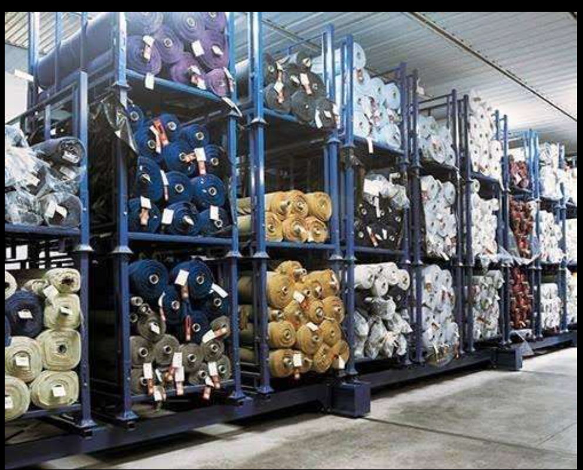
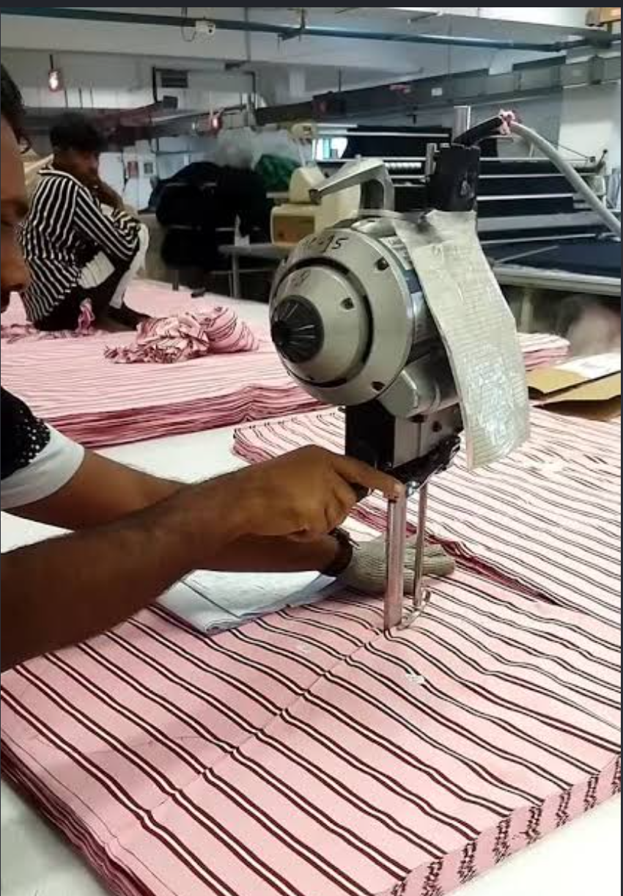
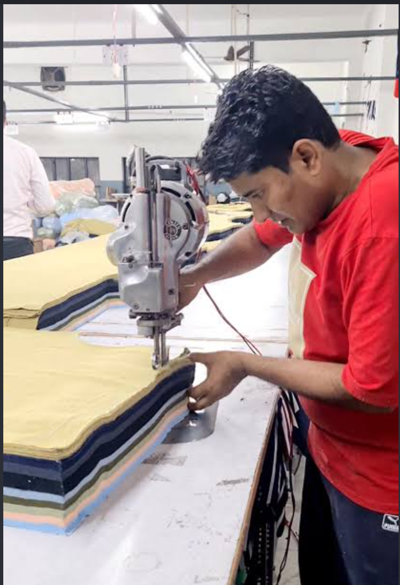
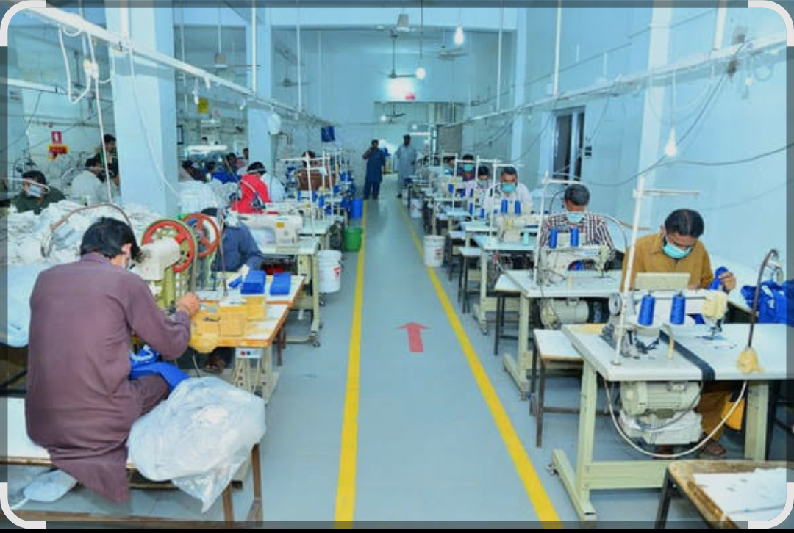
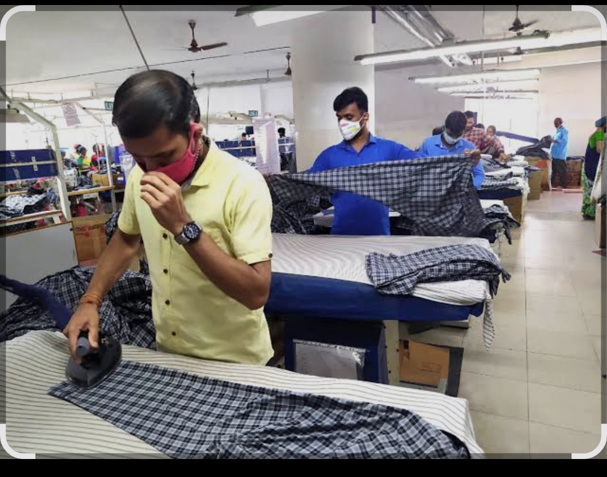
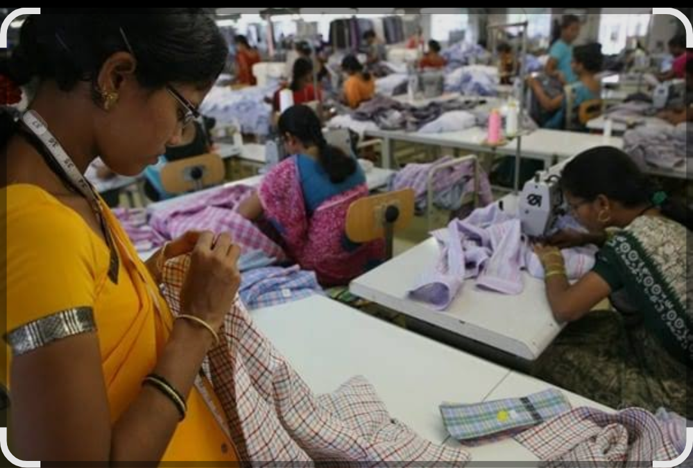
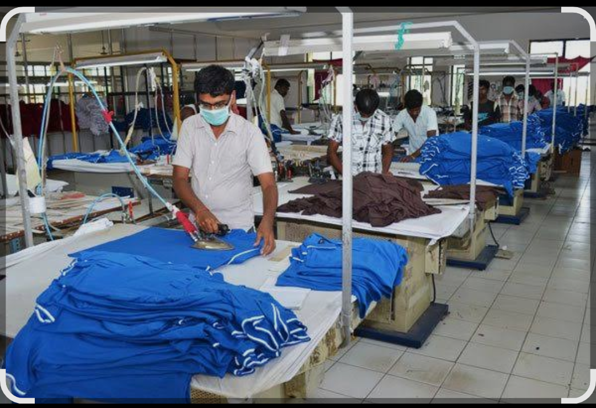
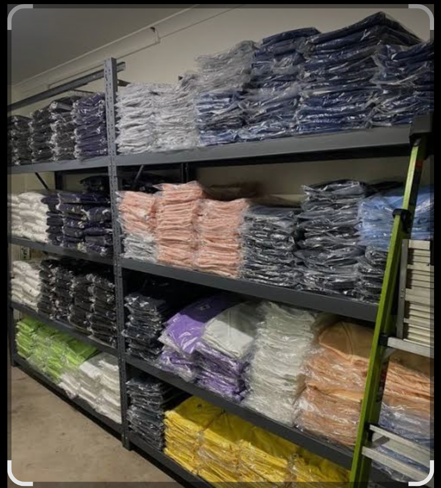

Fabric Storage
Fabric rolls organised and stored for garment production requirements.
Inside Meta Garments
From fabric selection and cutting to stitching, finishing and storage, every stage plays a role in bringing a garment together. Take a closer look at the work behind garment production.
Garment production involves careful handling of materials, attention to construction, and coordination across different stages of work. These photographs offer a look at the processes and working environments involved in garment manufacturing and preparation.
Our Production Process
A closer look at the work behind the product.

Fabric rolls organised and stored for garment production requirements.

Layers of fabric are cut into the required shapes before moving to the next stage.

Preparing fabric accurately helps establish the foundation for garment construction.

Sewing operations bring individual garment components together.

Garment components are handled and prepared throughout the production process.

Different stitching operations contribute to the construction of the finished garment.

Garments are prepared for the stages that follow construction and finishing.

Completed garments arranged in storage, ready for the next step in handling and supply.
Let's Talk Business
Tell us about your requirements and get in touch with Meta Garments to discuss your business needs.
Discuss a Business Enquiry →